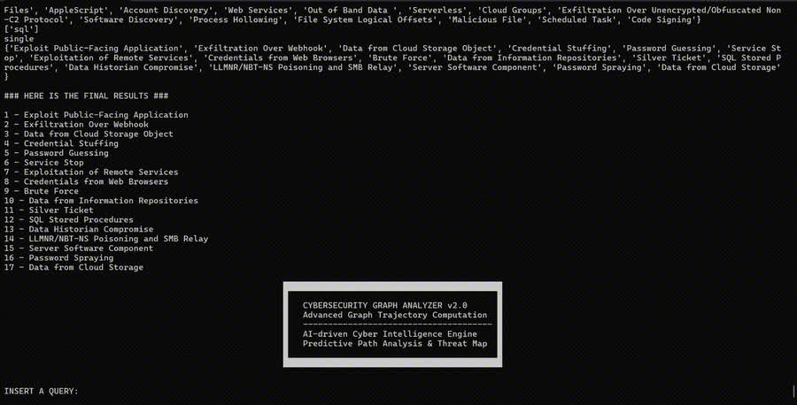
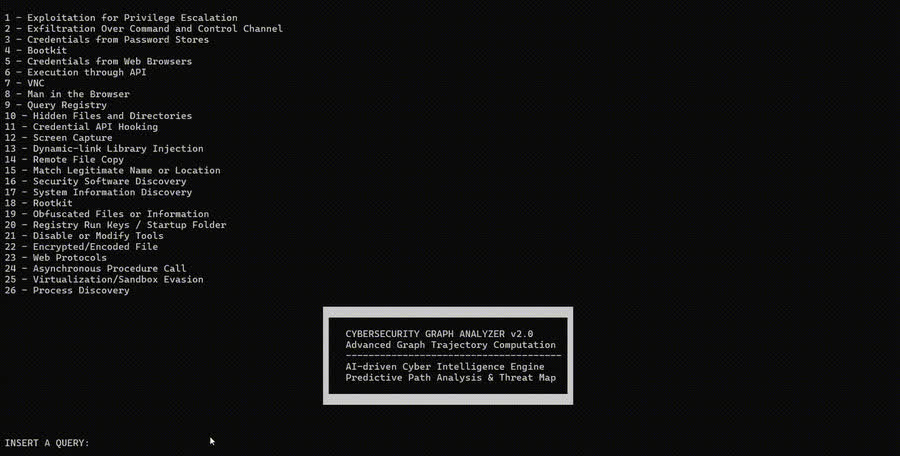
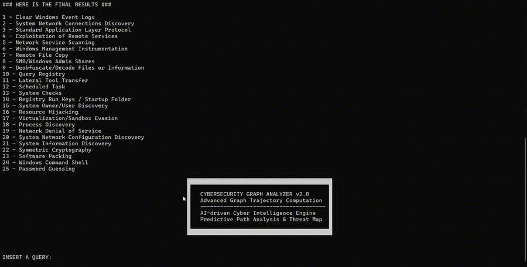
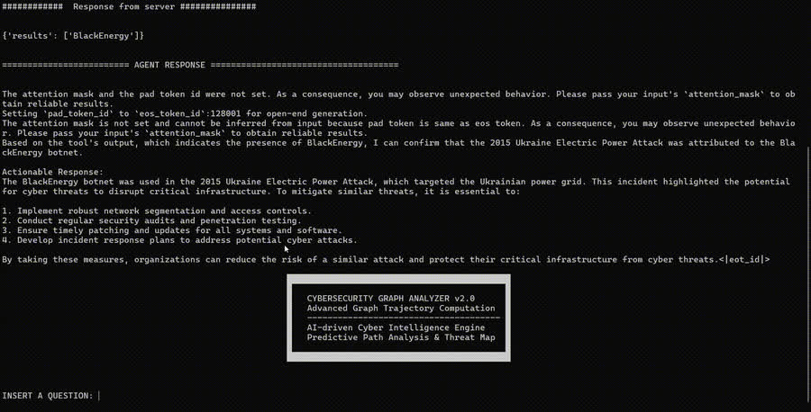

TURING — Trustworthy Unified Robust Intelligent Generative Systems
Sep 2025 — present
Led the development of adversarially robust training pipelines for multimodal foundation models applied to complex physical-system simulations.

LLM Alignment & Reinforcement Learning
I work on making large language models reason more reliably — through reinforcement learning methods that stay stable under pressure, and by testing them where mistakes actually cost something: cybersecurity.
Researcher, Scuola Superiore Sant'Anna, Pisa PhD, Sapienza University of Rome
What I work on, and why.
I am a researcher at Scuola Superiore Sant'Anna in Pisa, in the Department of Excellence in Robotics and AI, where I work on reinforcement learning for post-training and alignment of large language and multimodal foundation models — policy optimisation, reward design, training stability. I hold a PhD in Artificial Intelligence from Sapienza University of Rome.
Most RL post-training methods optimise a reward and hope reasoning follows. My work looks at what actually happens to the gradient: with GTPO, now accepted at TACL, I showed that group-relative objectives push conflicting updates through tokens shared by rewarded and penalised completions, and that fixing this removes the need for KL regularisation entirely. At ACL 2026 we traced the hidden objective biases that group-based RL introduces without anyone asking for them.
I test these ideas in cybersecurity — vulnerability detection, threat intelligence, malware analysis — because it is a domain where a plausible-sounding wrong answer has a cost, which makes it an honest benchmark for reasoning. Alongside this I build open-source research infrastructure: DantinoX, GTPO, TITAN and MoRSE are all public.
Where the work has happened.
Scuola Superiore Sant'Anna, Pisa · Department of Excellence in Robotics and AI
Reinforcement learning for post-training and alignment of large language and multimodal foundation models: policy optimisation, reward design, and training stability.
NetGroup
CNR-IIT
Sep 2025 — present
Led the development of adversarially robust training pipelines for multimodal foundation models applied to complex physical-system simulations.
Nov 2022 — Nov 2024 · H2020
Implemented core modules of the Data Analytics Toolbox: the System Protection Manager, the Application Manager and the Intrusion Detection System.
Synced from Google Scholar. Last updated 12 August 2026.
Open-source research code — all of it public and runnable.
Language modelling framework
Comparing autoregressive decoding, masked diffusion and continuous flow-matching is usually unfair: each paradigm lives in its own codebase, so any measured difference may come from the tokenizer or the training loop rather than the paradigm itself. DantinoX removes that confound.
The model backbone is fully separated from the generation method, so switching between AR, LLaDA-style masked diffusion and ELF flow-matching is a single configuration field — the weights, tokenizer, trainer and streaming generator stay byte-for-byte identical:
Attention (MHA/GQA/MLA, Flash, sliding-window, differential), feed-forward (dense, MoE, LatentMoE), positional encoding, optimizer, LoRA and DP×TP sharding are all flags on the same two dataclasses — thousands of valid combinations, zero code changes. It ships with a paradigm-agnostic trainer, a benchmarking suite with zero-execution FLOP counting, and a 14-subcommand CLI.
Reinforcement learning
The official implementation of GTPO, a method for stable policy optimization in LLMs. It targets two failure modes of GRPO:
GTPO introduces conflict-aware gradient corrections and entropy-based regularization, which makes training stable without KL-divergence regularization and without a reference model at all.
Cyber threat intelligence
TITAN is a typed, bidirectional knowledge graph framework for Cyber Threat Intelligence reasoning and question answering. It ingests MITRE ATT&CK STIX bundles, builds the TITAN ontology, generates both reasoning (CoT) and non-reasoning (NoCoT) datasets, and provides an end-to-end pipeline for training, evaluation and graph execution.

2:40 · 6 MB
1:51 · 4 MB
2:01 · 4 MB
2:22 · 5 MBRetrieval augmented generation
MoRSE is the first specialised AI assistant for cybersecurity. It runs two Retrieval Augmented Generation systems designed to give structured, verifiable answers to security questions.
Unlike LLMs that answer from parametric knowledge alone, MoRSE retrieves from non-parametric knowledge bases and grounds its answer in what it found — which both improves accuracy and makes the answer checkable. Because the knowledge bases update in real time, MoRSE keeps learning new threats without retraining.
Shorter, less formal notes on what I am reading and building.
Where GRPO breaks and what GTPO does differently — gradient conflicts, policy collapse, and why alignment is what makes reasoning trustworthy rather than merely fluent.
Notes I wrote for myself, in case they help someone else. Posterior: update = p − q — deterministic, low variance, compute-heavy. REINFORCE: update = −A(y)(e_y − p) — lightweight and scalable, but noisy, and matches q only in expectation.